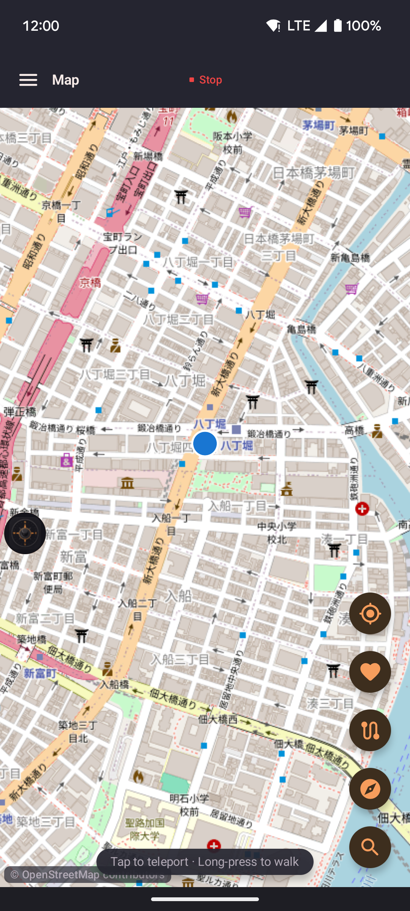
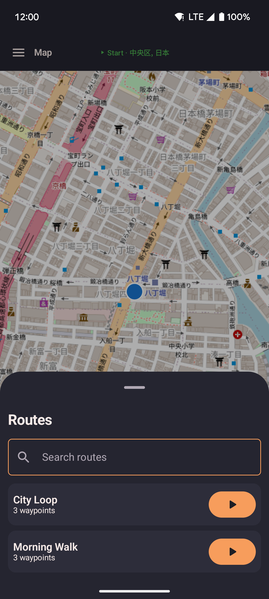
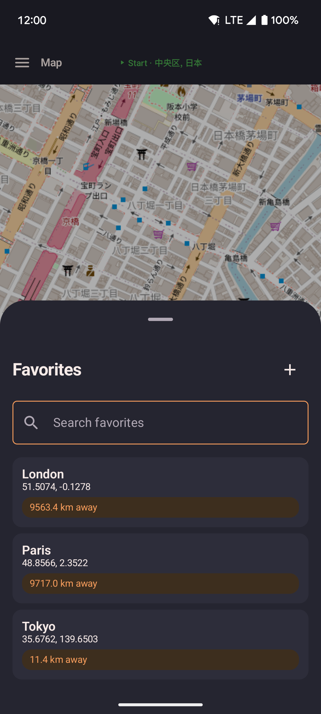
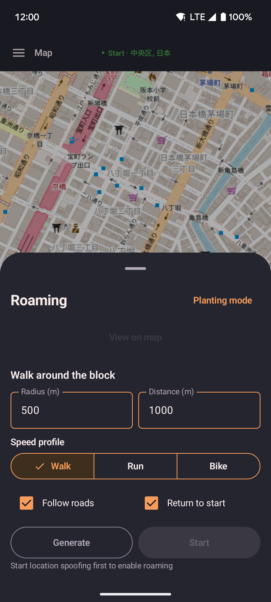

Map
OpenStreetMap rendered via MapLibre. Your spoofed location appears as a live marker. Use the map to set your position directly or launch routes, favorites, and roaming from the floating action buttons.

- Long-press anywhere on the map to open a sheet with "Walk here" or "Teleport here".
- Tap the start button to begin spoofing from the current map position.
- Use the re-center FAB to re-lock the camera to your moving position after panning away.
Routes sheet
Open your saved routes and start replaying one directly from the map.

- Tap a route to preview its polyline on the map.
- Start, loop, or reverse the route without leaving the map screen.
Favorites sheet
Jump to any saved favorite location without navigating to the Favorites screen.

- Tap a favorite to walk or teleport there instantly.
- Saved favorites appear with their name and distance from the current spoofed position.
Roaming sheet
Configure and start automatic roaming — locationjoystick walks for you within a set area.

- Set a center point (defaults to current spoofed position), radius, and total distance.
- Enable road-following to have roaming stay on real streets via OSRM routing.
- Optionally return to the starting position when the distance quota is reached.